Conocé Nuestro Mundo
Nuestra historia y la guía completa de atracciones que te esperan
Nuestra Historia
Mundo de Aventura nació con el sueño de convertirse en el epicentro de la felicidad familiar y la adrenalina en San Justo. Fundado con la firme convicción de que el entretenimiento debe ser seguro, innovador y accesible, nuestro parque se ha transformado en un punto de encuentro obligatorio para aventureros de todas las edades.
Lo que empezó como un pequeño predio de diversiones clásicas se convirtió hoy en el complejo de entretenimientos más moderno de la región, combinando la nostalgia de los juegos tradicionales con la ingeniería de vanguardia. ¡Trabajamos día a día para que cada rincón cuente una historia inolvidable!
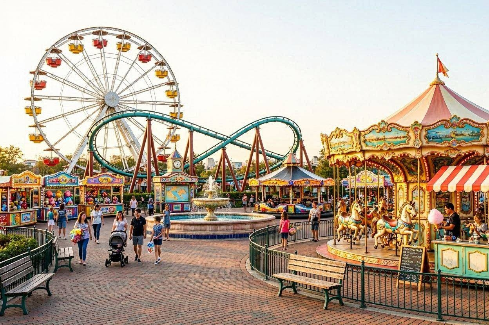
Guía Oficial de Atracciones
Descubrí todos los desafíos mecánicos y familiares distribuidos en nuestras zonas

El Rugido del Jaguar (Montaña Rusa)
Nuestra atracción insignia. Una estructura imponente con giros invertidos, loops verticales y una caída libre de 45 metros de altura no apta para cardíacos.
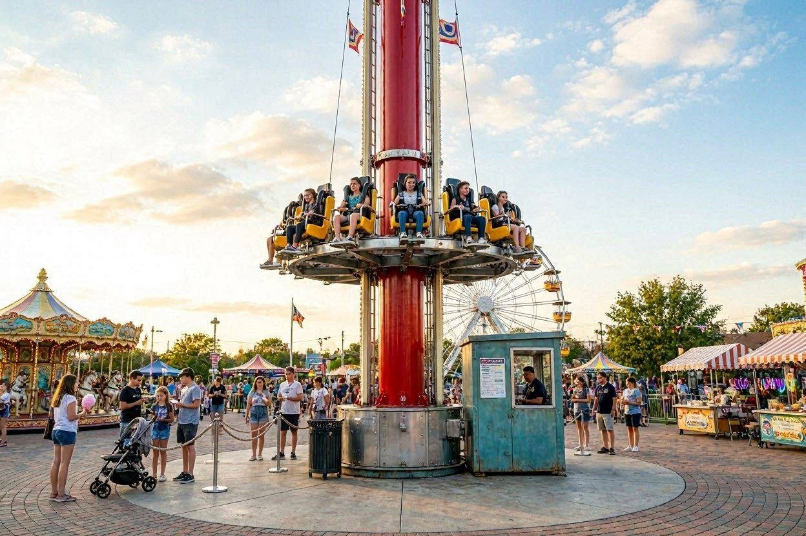
Desafío Vertical (Torre de Caída Libre)
Subís lentamente disfrutando de una vista panorámica de La Matanza, hasta que el freno se suelta y caés al vacío a pura gravedad desde 40 metros.
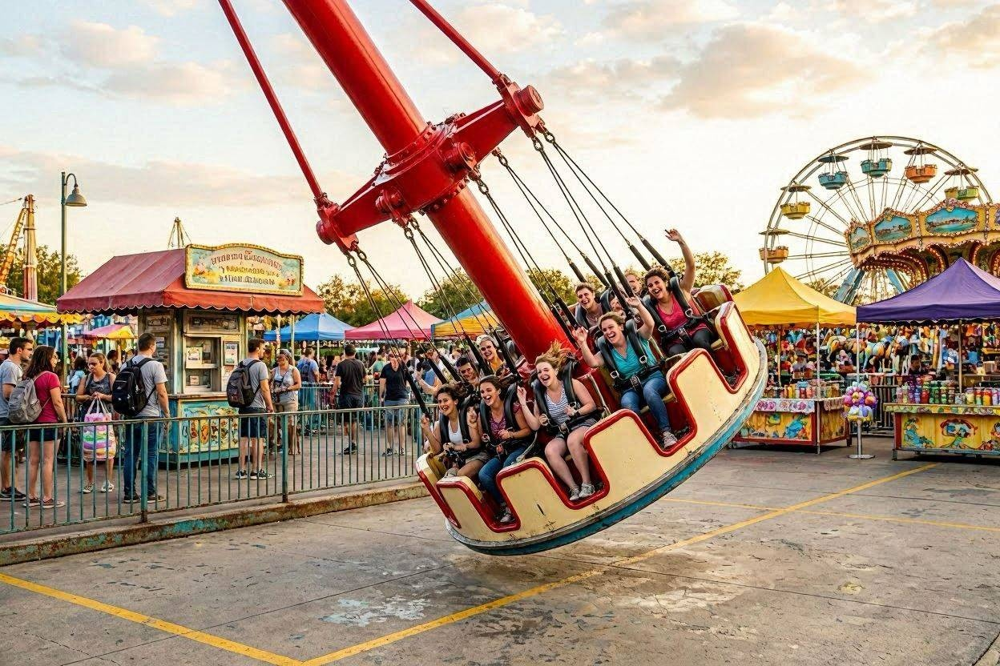
El Péndulo Infernal
Un enorme brazo mecánico balancea a 30 pasajeros en un ángulo de hasta 120 grados mientras la plataforma circular gira sobre su propio eje simultáneamente.
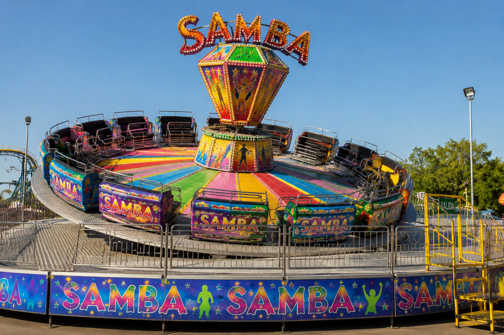
El Samba Aventurero
Un clásico indiscutible con la mejor música del momento. Saltos, giros bruscos y un animador en vivo que desafía tu equilibrio en cada compás.

El Torbellino (Tazas Giratorias)
¡Vos controlás la velocidad! Agarrá el volante central y hacé girar tu taza tan rápido como tus brazos y tu estómago te lo permitan.
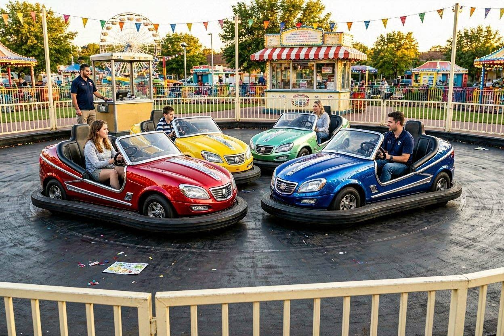
Pista de Choque (Autitos Chocadores)
Ponete el cinturón y salí a esquivar (o embestir) a tus amigos en nuestra enorme pista techada equipada con luces de neón y sonido envolvente.
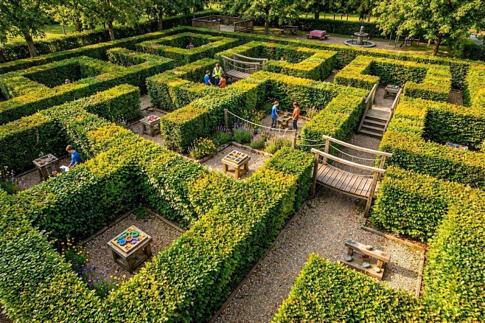
El Laberinto Esmeralda
Un intrincado recorrido de cercos verdes naturales vivos llenos de callejones sin salida, puentes colgantes internos y acertijos divertidos para resolver en equipo.
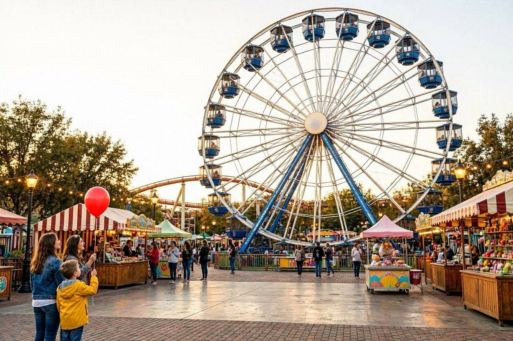
Gran Rueda de la Fortuna (Vuelta al Mundo)
La postal romántica e histórica del parque. Un paseo lento y tranquilo en góndolas panorámicas ideal para sacar las mejores fotos del atardecer.
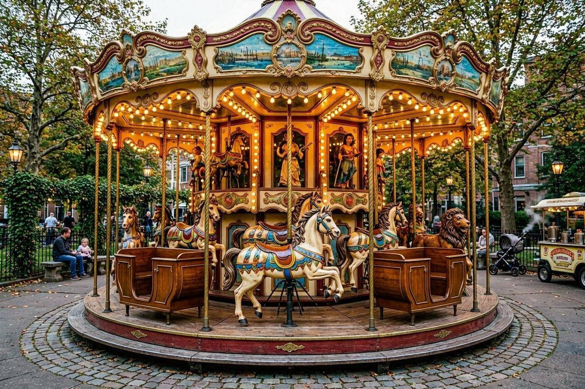
Calesita Mágica
Nuestra joya histórica restaurada artesanalmente. Caballos galopantes, carruajes y figuras clásicas con luces cálidas para la alegría de los más chiquitos.
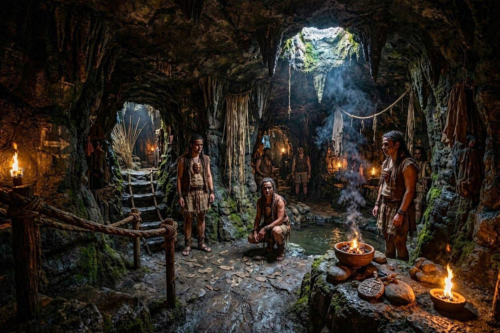
La Cueva del Pombero (Terror Regional)
Olvidate de los castillos de terror comunes. Este laberinto interactivo a oscuras se inspira en mitos locales. Con efectos de sonido realistas, túneles de viento y actores en vivo que custodian los secretos de la selva.
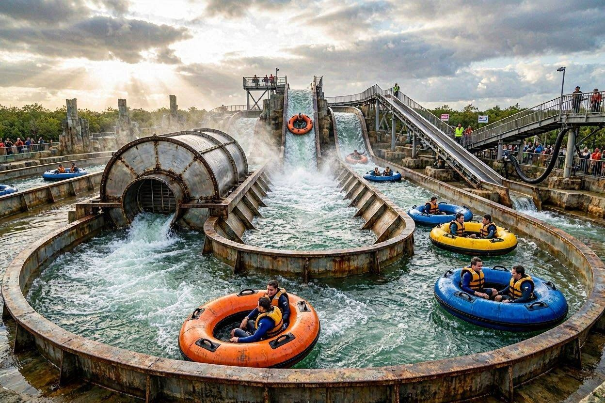
El Vórtice del Delta (Acuática Extrema)
Un recorrido fluvial único en botes circulares que atraviesa rápidos turbulentos y remolinos artificiales masivos mecánicos, culminando en un salto libre vertical que te garantiza salir empapado de pies a cabeza.
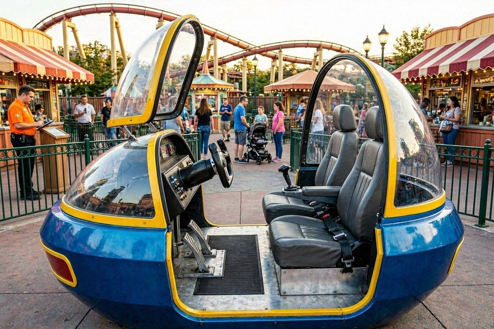
Simulador 4D: Aerolíneas de Aventura
Una cabina con tecnología hidráulica de última generación y lentes de realidad virtual donde "volás" a toda velocidad esquivando las estructuras mecánicas del parque en una misión interactiva por el espacio.